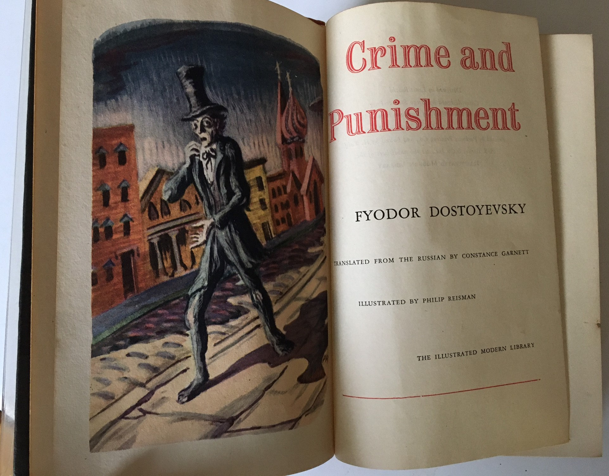

George Orwell - Animal Farm

Animal Farm is most famous in the West as a stinging critique of the history and rhetoric of the Russian Revolution. Retelling the story of the emergence and development of Soviet communism in the form of an animal fable, Animal Farm allegorizes the rise to power of the dictator Joseph Stalin. In the novella, the overthrow of the human oppressor Mr. Jones by a democratic coalition of animals quickly gives way to the consolidation of power among the pigs. Much like the Soviet intelligentsia, the pigs establish themselves as the ruling class in the new society.
Fyodor Dostoyevski - Crime and Punishment
Crime and Punishment focuses on the mental anguish and moral dilemmas of Rodion Raskolnikov, an impoverished ex-student in Saint Petersburg who formulates a plan to kill an unscrupulous pawnbroker for her money. Before the killing, Raskolnikov believes that with the money he could liberate himself from poverty and go on to perform great deeds. However, once it is done he finds himself racked with confusion, paranoia, and disgust for his actions. His justifications disintegrate completely as he struggles with guilt and horror and confronts the real-world consequences of his deed.